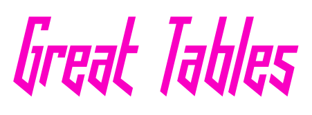

Great Tables
Absolutely Delightful Table-making in Python
Developers
Richard Iannone
Maintainer
Posit, PBC
Michael Chow
Author
Posit, PBC
Posit Software, PBC
Copyright holder, funder
Great Tables is all about making it simple to produce nice-looking display tables in Python. Display tables? Well yes, we are trying to distinguish between data tables (i.e., DataFrames) and those tables you’d find in a web page, a journal article, or in a magazine.
Here’s a quick example (click “Show the code” to see how it’s done):
Show the code
import polars as pl
from great_tables import GT, md, html
from great_tables.data import islands
islands_mini = (
pl.from_pandas(islands).sort("size", descending=True)
.head(10)
)
(
GT(islands_mini)
.tab_header(
title="Large Landmasses of the World",
subtitle="The top ten largest are presented"
)
.tab_stub(rowname_col="name")
.tab_stubhead(label="landmass")
.tab_source_note(
source_note=md("Source: McNeil, D. R. (1977). *Interactive Data Analysis*. Wiley.")
)
)
| Large Landmasses of the World |
| The top ten largest are presented |
| landmass |
size |
| Asia |
16988 |
| Africa |
11506 |
| North America |
9390 |
| South America |
6795 |
| Antarctica |
5500 |
| Europe |
3745 |
| Australia |
2968 |
| Greenland |
840 |
| New Guinea |
306 |
| Borneo |
280 |
| Source: McNeil, D. R. (1977). Interactive Data Analysis. Wiley. |
We can think of display tables as output only, where we’d not want to use them as input ever again. Other features include annotations, table element styling, and text transformations that serve to communicate the subject matter more clearly.
Great Tables lets you build tables with a chainable API that starts with GT(). From there you can add a header, format values, apply styles, and export to HTML, LaTeX, or image files.
Get Started
Install with:
Then head over to the User Guide to learn how to build your first table, or explore the Examples gallery for inspiration.